My Favorite Movies & TV Shows
1. Suits (2011-2019)

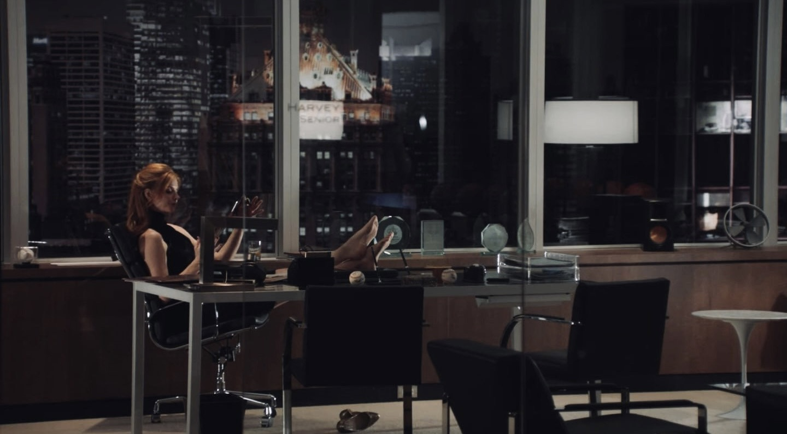
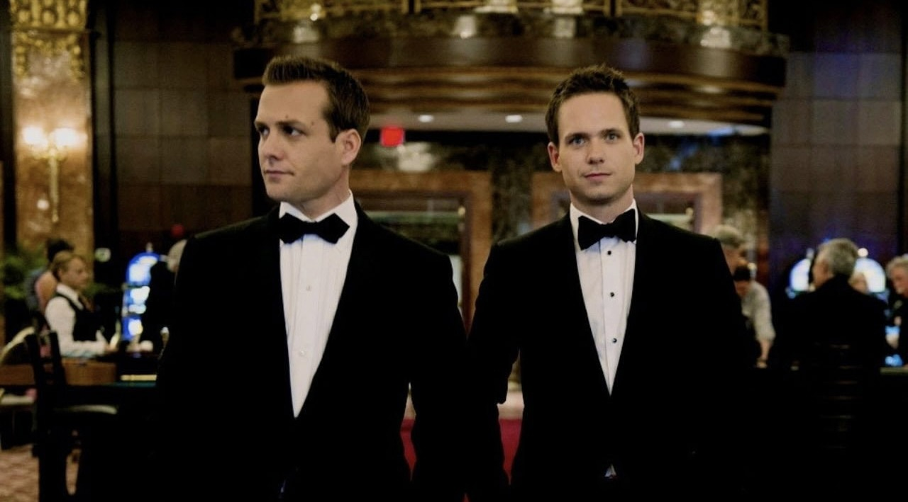
Genre: Legal drama
Created by: Aaron Korsh
Country of Origin: United States
Original Language: English
Seasons: 9
Episodes: 134
Plot:
A brilliant college dropout with a photographic memory, Mike Ross, talks his way into a job as a law associate for one of New York City's best corporate attorneys, Harvey Specter. Despite having never attended law school, Mike's talent and quick thinking make him a valuable asset to the firm. The show follows their cases, personal lives, and the challenges they face in the legal world.
2. The Diplomat (2023-present)

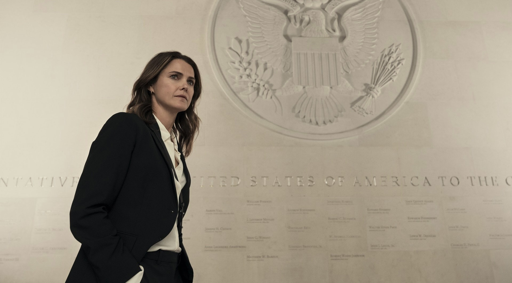
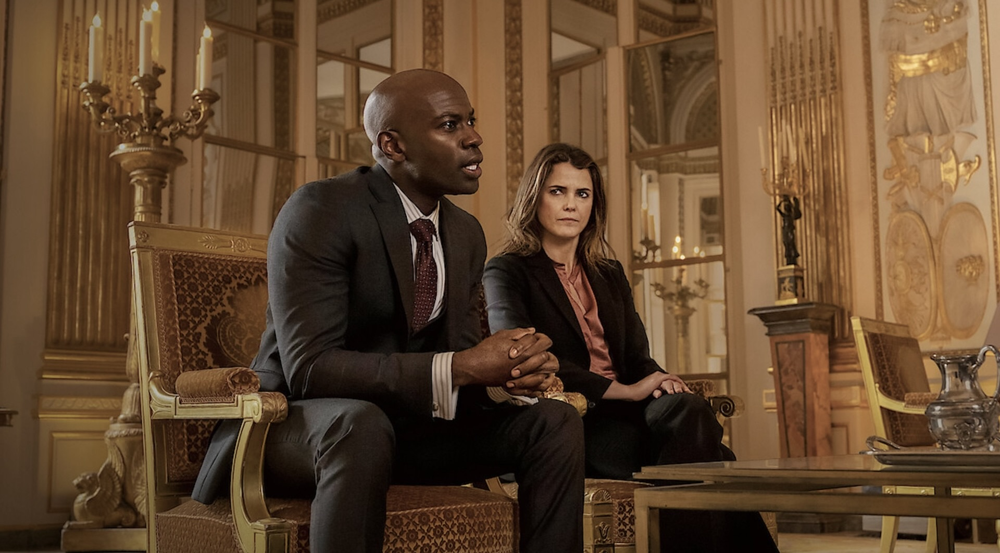
Genre: Political thriller, drama
Created by: Debora Cahn
Country of Origin: United States, United Kingdom
Original Language: English
Seasons: 4
Episodes: 30
Plot:
Amid an international crisis, a career diplomat, Kate Wyler, is unexpectedly thrust a high-profile role as the United States ambassador to the United Kingdom, forcind her to defuse global geopolitical flashpoints while navigating a turbulent marriage to a fellow politician. The show explores the complexities of diplomacy, personal sacrifice, and the challenges of balancing professional and personal life in the high-stakes world of international relations.
3. The Mentalist (2008-2015)
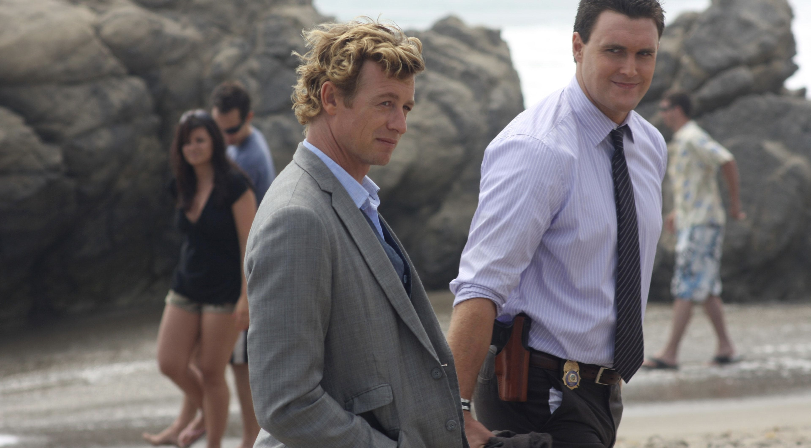
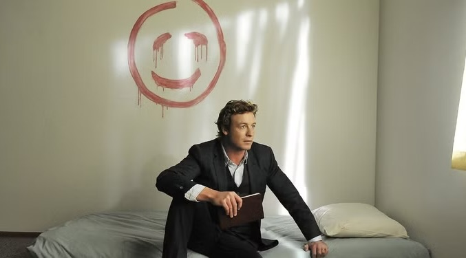

Genre: Crime, drama, mystery
Created by: Bruno Heller
Country of Origin: United States
Original Language: English
Seasons: 7
Episodes: 151
Plot:
A former psychic medium, Patrick Jane, with exceptional observational skills joins the California Bureau of Investigation (CBI) as an independent consultant to solve crimes. He uses his sharp intellect and psychological manipulation to solve complex murder cases, all while hunting the elusive serial killer who murdered his family.
4. Miss Sloane (2018)
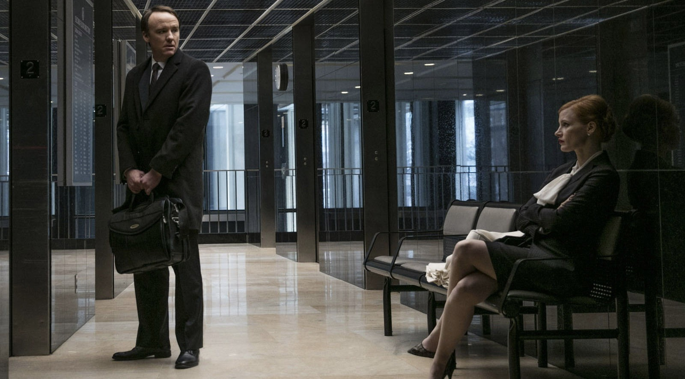

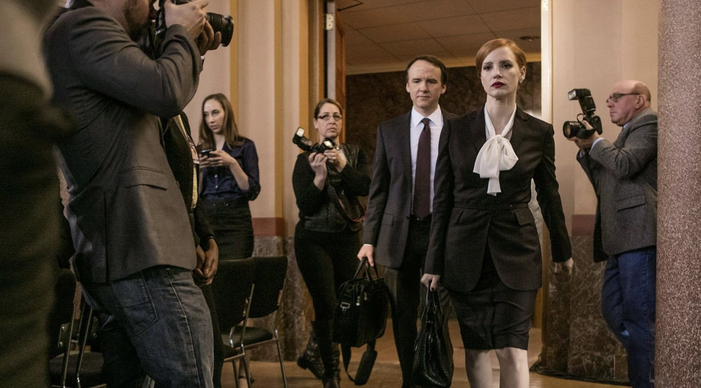
Genre: Political thriller, drama
Created by: John Madden (Director), Jonathan Perera (Writer)
Country of Origin: United States, France
Original Language: English
Plot:
A ruthless and highly successful political lobbyst in Washington D.C., Elizabeth Sloane, takes on the most powerful opponent of her career when she advocates for a controversial gun control bill. She will stop at nothing to win, but her obsessive drive threatens both her professional and personal life.
5. Dept. Q (2025-present)
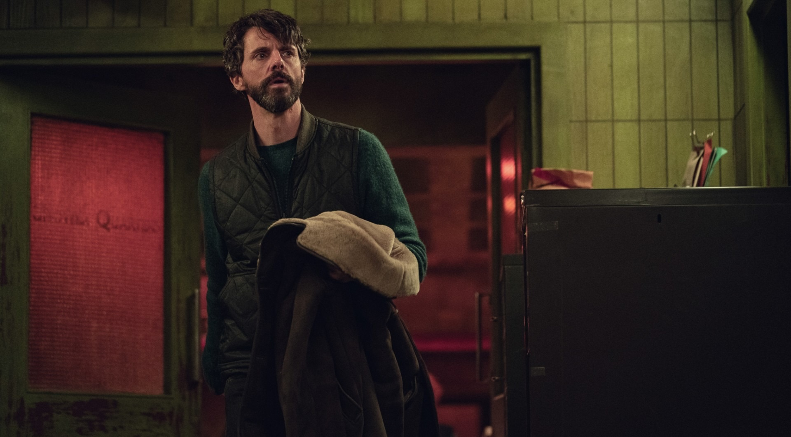
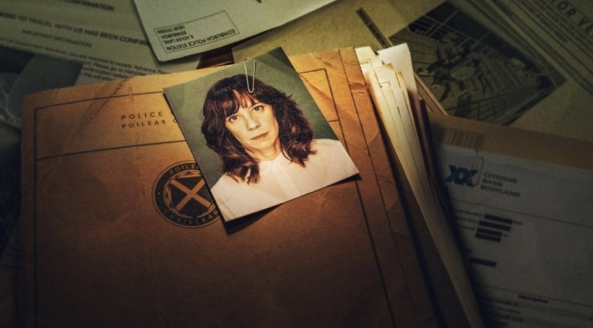
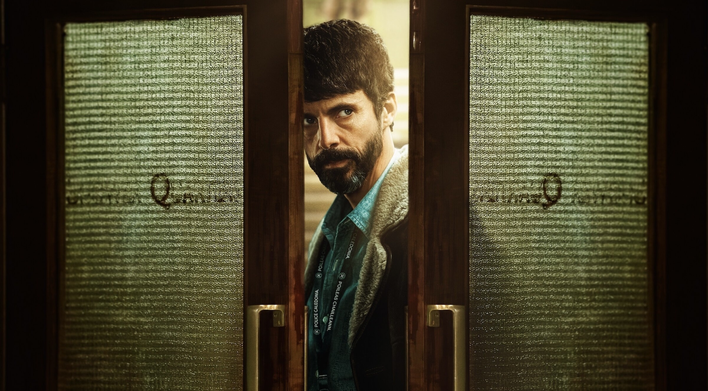
Genre: Crime, thriller
Created by: Scott Frank, Chandni Lakhani
Country of Origin: United Kingdom
Original Language: English
Seasons: 1
Episodes: 9
Plot:
Carl Mørck, a former top-rated detective, is wracked with guilt following an attack that left his partner paralyzed and another policeman dead. On his return to work, Carl is assigned to the Department Q, a cold case division, where he and his assistant Assad investigate unsolved crimes. And their first case is the disappearance of a young successful prosecutor four years ago.
6. The Punisher (2017-2019)
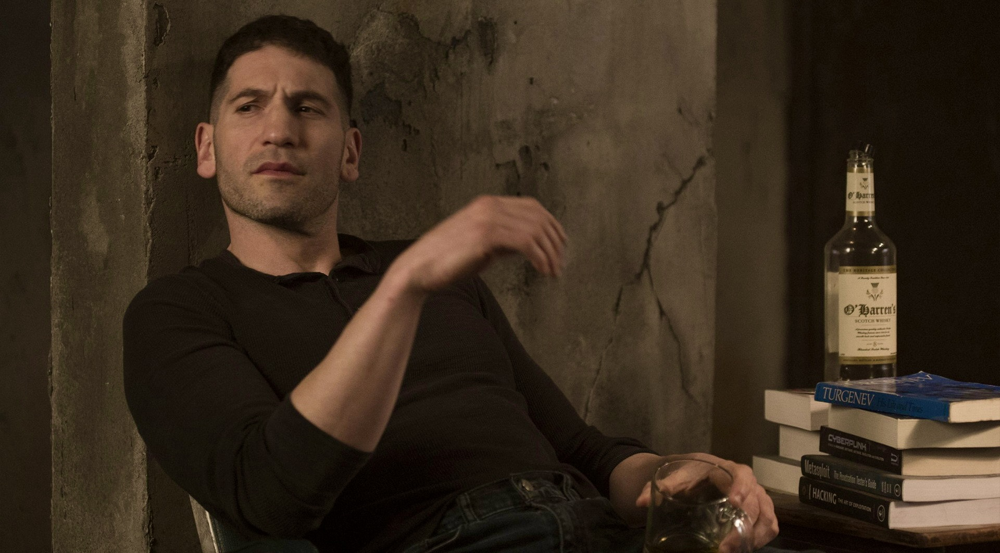
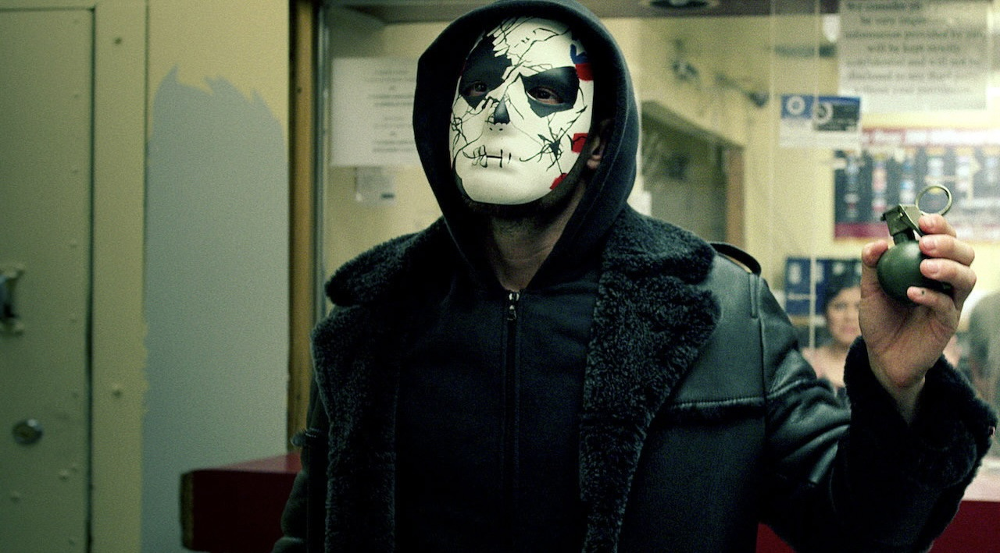
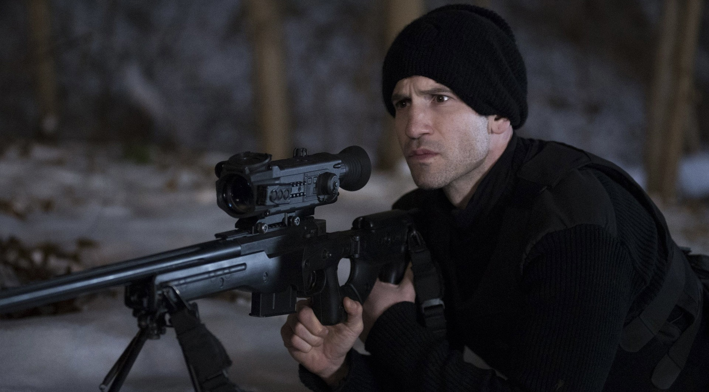
Genre: Action, crime, thriller
Created by: Steve Lightfoot
Country of Origin: United States
Original Language: English
Seasons: 2
Episodes: 26
Plot:
Frank Castle, a former Marine turned vigilante known as «The Punisher», seeks justice for the murder of his wife and children. Using his military training and combat skills, he wages a one-man war against crime and corruption in New York City, taking down criminals and those who have evaded the law.
7. The Residence (2025)
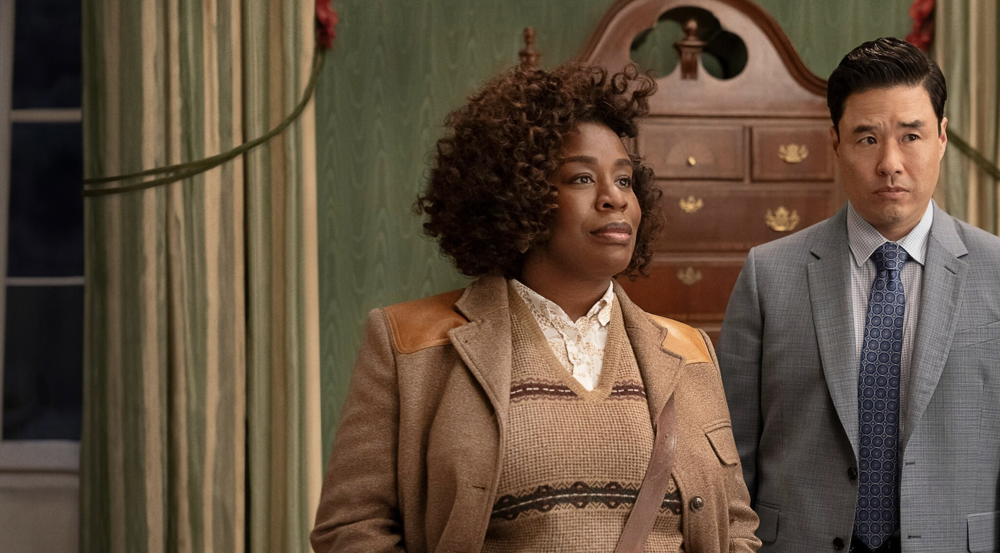
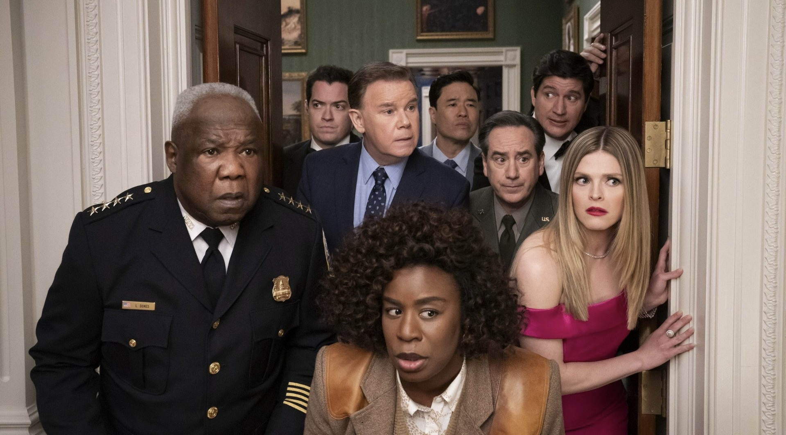
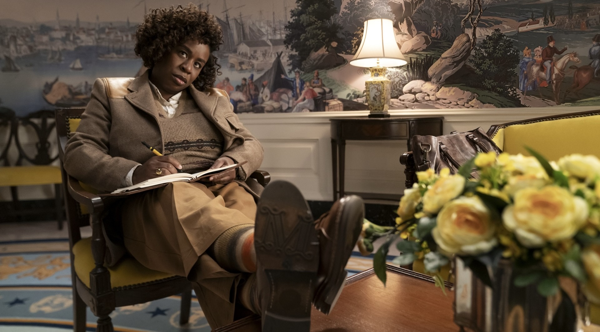
Genre: Mystery, comedy, drama
Created by: Paul William Davies
Country of Origin: United States
Original Language: English
Seasons: 1
Episodes: 8
Plot:
Description